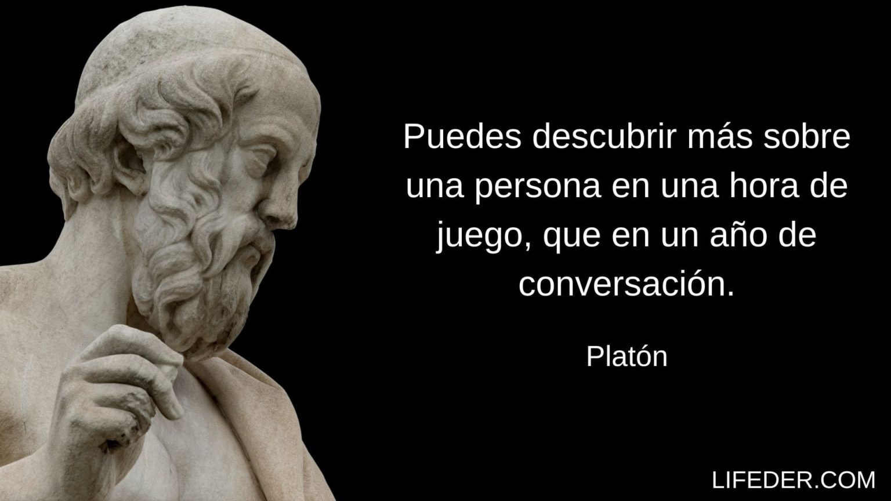

Platon
Platón fue un filósofo griego que vivió entre el 427 y el 347 a.C. Fue discípulo de Sócrates y maestro de Aristóteles, y es uno de los filósofos más influyentes en la historia de la filosofía. Se le conoce principalmente por haber sido el primer filósofo en presentar una obra de manera más o menos sistemática. Entre sus logros más destacados se encuentran la fundación de la Academia, considerada la primera institución de educación superior de Europa, y la escritura del «mito de la caverna», una de las más célebres alegorías filosóficas de la historia con la que Platón explica la situación del ser humano respecto al conocimiento.
Su filosofia
La filosofía de Platón se centraba en la idea de un ser único, eterno e inmutable. Propuso que el principio de todas las cosas era lo que llamó el ápeiron, una sustancia infinita e indeterminada que no podía ser percibida por los sentidos humanos. Según Platón, el entorno sensible que percibimos a través de nuestros sentidos es solo una copia imperfecta del entorno de las Ideas. Las Ideas son realidades eternas e inmutables que existen en un plano superior de realidad. Platón argumentaba que solo a través de la razón y la contemplación de las Ideas podemos acceder al verdadero conocimiento.Como impacta nuestra vida
La filosofía de Platón sigue teniendo un impacto significativo en el pensamiento contemporáneo. Sus ideas y enfoques han servido de base para numerosas ramas de la filosofía y la ciencia. Su legado perdura como un recordatorio de la importancia de la observación, el razonamiento lógico y la búsqueda constante de conocimiento. Sus aportaciones a la física y su rechazo a las narraciones mitológicas para explicar los fenómenos naturales han influido en la forma en que entendemos el mundo. Además, su pensamiento ha influido en el desarrollo de la teología al cuestionar la tradición mitológica y establecer el carácter racional de lo divino.
